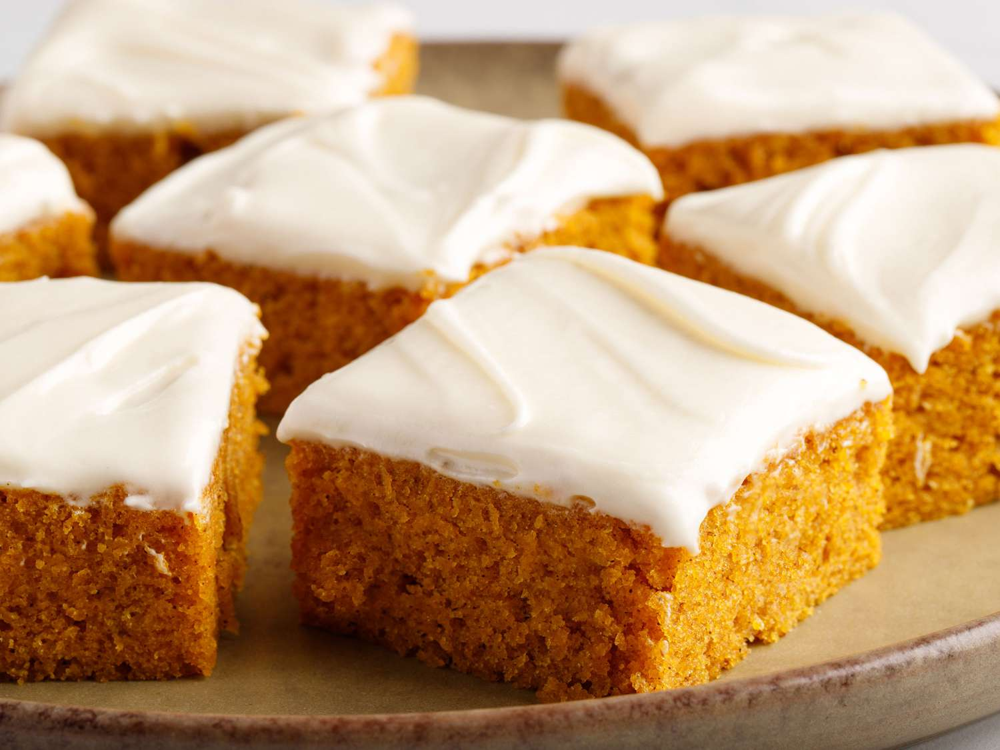

Paul's Pumpkin Bars

These easy pumpkin bars are full of fall flavor with a moist texture and a decadent cream cheese frosting. So far, I haven't found anyone who doesn't love them!
Ingredients
- 1 (15 ounce) can pumpkin puree
- 1 ⅔ cups white sugar
- 1 cup vegetable oil
- 4 large eggs
- 2 cups all-purpose flour
- 2 teaspoons ground cinnamon
- 2 teaspoons baking powder
- 1 teaspoon baking soda
- 1 teaspoon salt
Frosting
- ½ cup butter, softenede
- 1 (3 ounce) package cream cheese, softened
- 1 teaspoon vanilla extract
- 2 cups sifted confectioners' sugar
Steps
- Preheat the oven to 350 degrees F (175 degrees C).
- Make cake: Beat pumpkin, sugar, oil, and eggs with an electric mixer in a medium bowl until well combined.
- Sift together flour, cinnamon, baking powder, baking soda, and salt in a separate bowl; stir into pumpkin mixture until thoroughly combined.
Spread batter evenly into an ungreased 10x15-inch jelly roll pan.
- Bake in the preheated oven until cake bounces back when gently pressed, 25 to 30 minutes. Remove from the oven and let cool.
- While the cake is cooling, make frosting: Beat together butter and cream cheese until smooth; stir in vanilla.
Add confectioners' sugar a little at a time, beating until mixture is smooth.
- Spread frosting evenly on top of cooled cake. Cut into 24 squares.
Return to Index